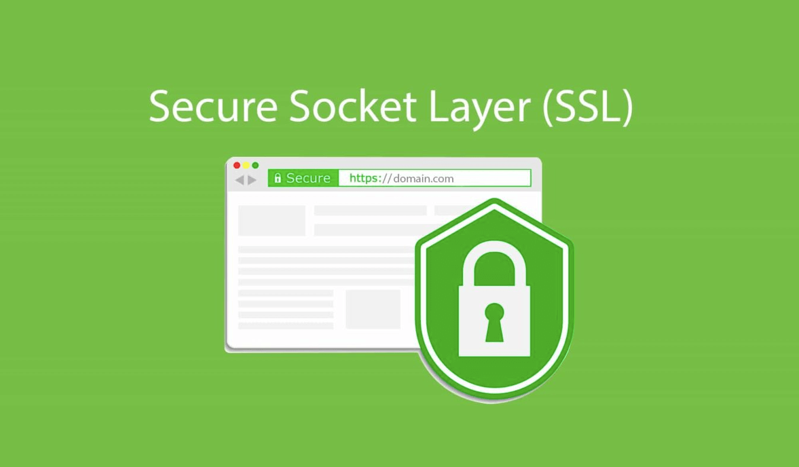

Learn about your online security
When we visit a website online with our computer or cell phone, you may find a small lock icon on the far-left side of the URL bar. You may wonder what this small lock icon is used for. Read the following article, you can answer some of your questions.
In today's era of rapid development of technology network, we will use our personal privacy information on the network with high frequency, and these critical data will bring some security problems, such as information leakage or hacking. SSL (Secure Socket Layer) is the only way to protect your personal information from being stolen by others.
What does SSL mean?
SSL (Secure Sockets Layer), and its successor Transport Layer Security (TLS), is a security protocol that provides security and data integrity for network communications. Today it is widely used for web pages, email, Internet fax, instant messaging and voice over IP telephony (VoIP). TLS (Transport Layer Security) is a more secure and upgraded version of SSL, and since the term SSL is more commonly used, we still refer to our security certificates as SSL.
Furthermore, each time you visit a website, data is exchanged between your browser (which we call the client) and the website you want to visit (which we call the server), and this process is controlled by a data transfer protocol we call HTTP (Hyper Text Transfer Protocol). The security extension of HTTP is HTTPS (Hyper Text Transfer Protocol Secure), when the data is transferred between the client and the server it is encrypted in a way to prevent third parties from accessing the information to ensure security.
So how do we know if the website we are visiting has an SSL security certificate? When you look at the website you are visiting, you will see that the URL (Uniform Resource Locator) in the address bar starts with HTTPS or HTTP. If it starts with HTTPs and not HTTP, this means that the site is being protected with an SSL certificate ('s' means secure). Therefore, we recommend that you never provide any type of personal or banking information to a website that does not have SSL encryption.
Since SSL certificates are so relevant to keeping our personal information secure, the authority that issues the certificate to the website is particularly important. Typically, a Certificate Authority is a trusted third party entity that issues digital certificates and manages public key certificates to encrypt end-user data, and the CA's role in this process is to ensure that users receive a unique certificate for valid authentication. Some common certificate authorities such as Comodo with 42.6% market share, Symantec with 15.3% market share, and GoDaddy with 7.7% market share.
In summary, SSL certificates and HTTPs transport protocols play a vital role in enabling us to access websites securely and not have information stolen by others, and more and more people are now paying attention to the security of website access.
References
What is Certificate Authority (CA)? how to get SSL from ca? About SSL. (2021, June 10). Retrieved September 18, 2021, from https://aboutssl.org/certificate-authority/.
“What Is SSL Certificate and Types of SSL Certificate.” Gloify, 9 June 2020, Retrieved September 18, 2021, from https://gloify.com/blog/what-is-ssl-and-types-of-ssl-certificate/.